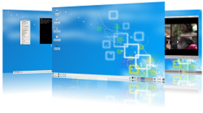

About Salix
Salix is a GNU/Linux distribution based on Slackware that is simple,
fast and easy to use, with stability being a primary goal. Salix is
also fully backwards compatible
with Slackware, so Slackware users can benefit from Salix
repositories, which they can use as an "extra" quality source of
software for their favorite distribution. Like a bonsai, Salix is
small, light & the product of infinite care.
Features

- one application per task on the installation ISO
- fully backwards compatible with Slackware
- optimized for desktop usage
- high quality package repositories with dependency support
- incredibly fast package tools
- simple & fully localized system administration tools
- nice artwork
- installation ISO fits on a single CD
- supports 32-bit and 64-bit architectures
Installation
The installation is text dialog based, but easy to navigate and
complete. It is also very fast; a "full" mode installation will take
less than 5 minutes on any modern PC.
Salix has three different modes of installation:
- Full: Everything that is included in the iso is installed. That
includes a complete desktop environment and a complete selection of
applications that matches the respective environment, always
following the "one application per task" rationale.
- Basic: This installs only a basic desktop environment, with very
few extra applications installed on top, such as a web browser
and the gslapt package manager. Ideal for advanced users that
would like to install a lightweight desktop environment and add
their own choice of applications.
- Core: Only the minimum essentials for a console system to
start are included. A graphical environment is not provided.
This is ideal if you are an experienced user and want to
customize your installation for any specific purpose, such
as a web server, file server etc.
All three installation modes come with a complete
development environment, so users don't need to add anything
to start developing and compiling applications.
Team
Salix is developed by an open community of volunteers and contributors
all over the world. To learn more about the people behind Salix take a
look at our team page.